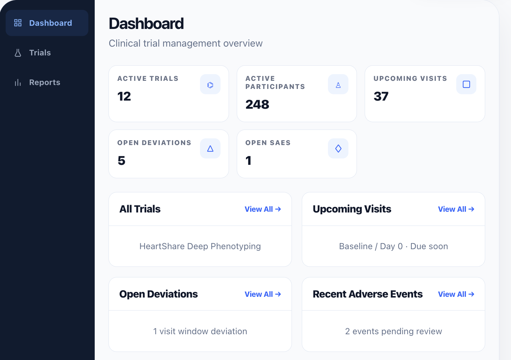

Trials
Keep each study’s structure, status, and operational context in one place from setup to closeout.
TrialCore is a modern clinical trial management system for clinical research coordinators, research teams, study administrators, supervisors, and auditors. It brings participants, visits, tasks, safety reporting, deviations, protocol versions, reports, and audit logs into one clear workspace.

Trusted by research teams committed to better outcomes.
TrialCore organizes trials, participants, visits, protocol versions, screening criteria, tasks, reports, and audit logs in a shared operational model.
Trials, participants, visits, protocol versions, screening criteria, tasks, reports, and audit logs live together so study teams can follow the work without added visual noise.
Keep each study’s structure, status, and operational context in one place from setup to closeout.
Track enrollment progress, study status, participant history, and visit progress with clarity.
Keep protocol changes and version history aligned to study operations and participant activity.